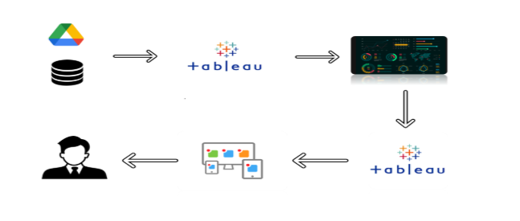

Food Ordering Behaviour & Consumer Trends
A Structured Analysis of Choices and Habits across 50,000 Transactions in Major Indian Metropolitan Hubs
Project Overview & Business Objectives
The on-demand food delivery landscape demands precision in demand forecasting, fleet management, and consumer cohort personalization.
The Business Problem
Food delivery platforms experience acute volatility in order volume, shifting customer tastes across metropolitan cities, and operational delivery bottlenecks during peak rush windows. Without consolidated intelligence, aggregators suffer from delayed fulfillments, misallocated rider fleets, and inefficient marketing spend.
- Unpredictable demand spikes across lunch and dinner slots.
- Regional taste divergence between North Indian and South Indian cuisines.
- Fluctuating customer satisfaction scores tied directly to fulfillment delays.
Analytical Objectives
This project ingests 50,000 empirical transactions to model consumer behavior, pinpoint regional demand hotspots, and provide actionable operational recommendations for decision makers.
- Map revenue contribution across 4 meal types and 6 culinary categories.
- Evaluate age-based demographic preferences across restaurant formats.
- Track delivery duration distributions to safeguard customer rating benchmarks.
Dataset Characteristics & Validation
Built upon food_ordering_behaviour_dataset.csv, extracted into a high-performance Tableau Hyper engine database.
| Field Name | Data Type | Tableau Role | Sample Categories / Description |
|---|---|---|---|
order_id |
Integer | Dimension | Unique order transaction key (50,000 distinct) |
user_id |
Integer | Dimension | Customer identification number (8,933 distinct users) |
city |
String | Dimension | Bangalore, Delhi, Mumbai, Hyderabad, Pune, Chennai |
cuisine |
String | Dimension | North Indian, South Indian, Chinese, Italian, Mexican, Fast Food |
meal_type |
String | Dimension | Breakfast, Lunch, Dinner, Snack |
restaurant_type |
String | Dimension | Fine Dining, Fast Casual, Street Food |
order_value |
Integer | Measure | Gross transaction value in Indian Rupees (₹) |
time_taken_to_order |
Integer | Measure | Total fulfillment transit duration in minutes |
rating_given |
Integer | Measure | Customer feedback rating (1 to 5 stars) |
company |
String | Dimension | Corporate, Individual, Family, Friends ordering context |
Technical Architecture
Systematic data flow from raw transactional ingestion to cloud visualization and public stakeholder dissemination.

Data Ingestion
Ingestion of 50,000 records from Google Drive / CSV into Tableau Hyper Engine.
Data Modeling
Null checks, data type casting, and binning for Age and Delivery Times.
Visual Analytics
Building 13 worksheets, executive KPI cards, and cross-filter matrices.
Cloud & Web Dissemination
Publishing to Tableau Public Cloud and embedding into GitHub Pages.
Key Visualization Breakdown
Nine comprehensive visualization categories providing 360-degree visibility into customer habits.
Executive Metrics Strip
Instant clarity on Total Orders (50,000), Total Revenue (₹), Average Order Value, and Customer Rating benchmarks.
Flavours Across Cities
Cross-tabulates Gross Revenue across 6 metropolitan cities and 6 cuisines to reveal geographical taste strongholds.
Age Cohort & Dining Formats
Correlates binned Age Groups with restaurant types, illustrating adult dominance in Fast Casual and Fine Dining.
Corporate vs Individual Meal Types
Analyzes corporate order volume spikes during weekday lunch and dinner operational slots.
Customer Rating by Meal Type
Evaluates service consistency and customer ratings across Breakfast, Lunch, Dinner, and Snack meal windows.
Revenue Contribution by Meal Type
Quantifies Dinner and Lunch as the twin primary GMV pillars sustaining overall platform financial performance.
Cuisine Popularity Distribution
Shows overwhelming platform volume affinity for North Indian and South Indian cuisines, followed by Chinese.
Cities by Order Volume
Ranks metropolitan markets, confirming Bangalore and Delhi as the primary demand generation epicenters.
Delivery Duration Distribution
Displays normal distribution clustering of order fulfillment times, confirming predictable delivery SLA adherence.
Interactive Tableau Dashboard
Explore the live published visualization directly embedded below from Tableau Public.
Key Analytical Insights & Strategic Value
Empirical findings derived directly from the verified 50,000-order Tableau model.
Bangalore & Delhi Lead Order Volume
Bangalore records the single highest order volume, closely trailed by Delhi and Mumbai. Rider fleet allocation and dark-store onboarding generate the highest return in these primary hubs.
Indian Regional Cuisines Dominate Billing
North Indian and South Indian cuisines represent the dominant culinary categories across both order count and total gross billing across all six metropolitan areas.
Dinner & Lunch Anchor Platform GMV
Dinner represents the largest gross revenue contributor, with Lunch as the secondary peak. Premium delivery slots and promotional meal combos are best monetized during these windows.
Adult Consumers Drive Higher Basket Value
Working adults and mature professionals (ages 21–40+) generate the core volume of orders and show high affinity for Fast Casual and Fine Dining segments.
Corporate Orders Spike at Midday
Orders categorized as corporate/office catering surge predictably during lunch hours with larger basket sizes, pointing toward high-potential B2B team lunch subscriptions.
Delivery Times Exhibit SLA Consistency
Delivery durations cluster tightly around predictable norms with minimal tail-end delays, directly correlating with sustained positive customer satisfaction ratings.
Stakeholder Scenarios
How diverse cross-functional roles extract tangible decision support from this analytics solution.
Rahul Sharma
Evaluates commercial performance, customer acquisition efficiency, and cuisine demand shifts.
Priya Mehta
Responsible for driver fleet dispatching, transit SLA adherence, and restaurant prep efficiency.
Neha Reddy
A frequent app user seeking rapid delivery speed, fair delivery fees, and consistent meal quality.
Video Walkthroughs & Demonstrations
Verified video demonstrations showcasing dataset loading, extract configuration, and interactive dashboard exploration.
Part 1: Dataset Ingestion & Extract Setup
Open Video ↗Part 2: Publishing & Dashboard Walkthrough
Open Video ↗Comprehensive Technical Documentation
Detailed technical guides authored for academic and mentor project evaluation.
Project Overview
Problem context, target personas, and technology stack.
Methodology
Analytical lifecycle, formulas, and dimensions.
Data Preparation
Complete 19-attribute field dictionary & binning logic.
Visualizations Catalog
Detailed analysis of all 9 core chart categories.
Dashboard & Story
Layout architecture and the 2-minute mentor walkthrough.
Business Insights
Strategic takeaways and operational recommendations matrix.
Performance Testing
14-point test suite results and web performance benchmarks.
Evaluation Checklist
Comprehensive mentor evaluation criteria and verification status.